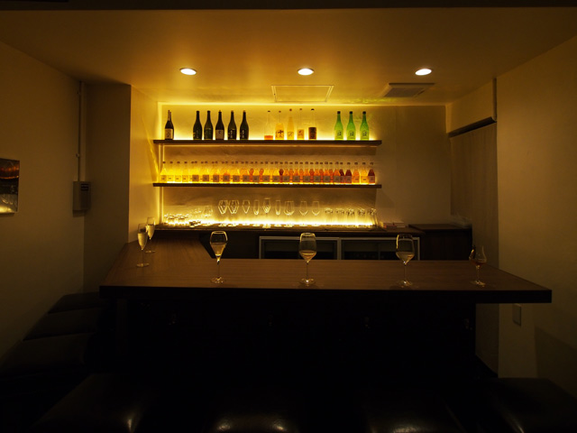
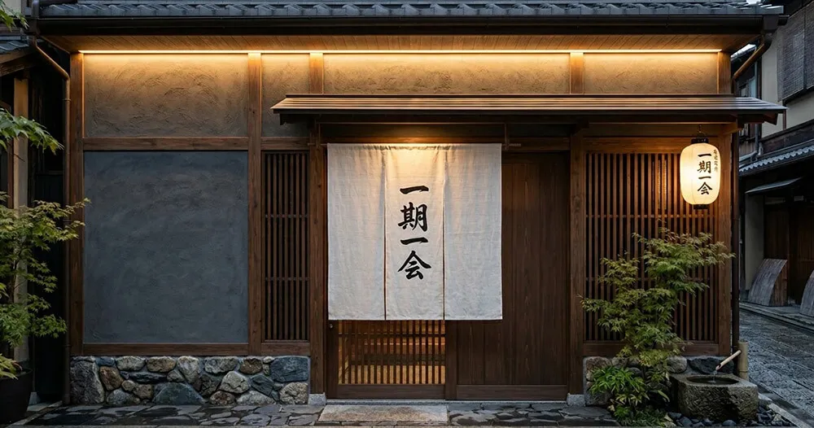
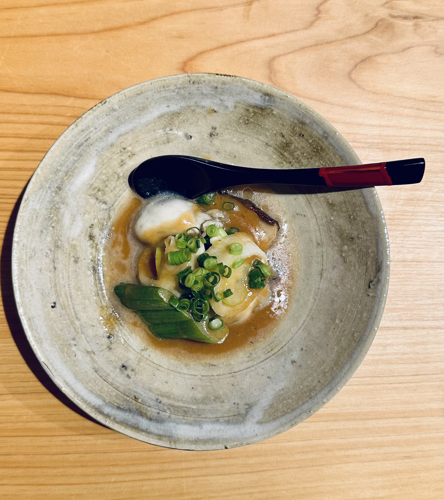
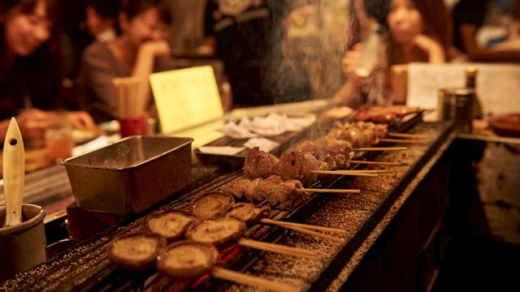
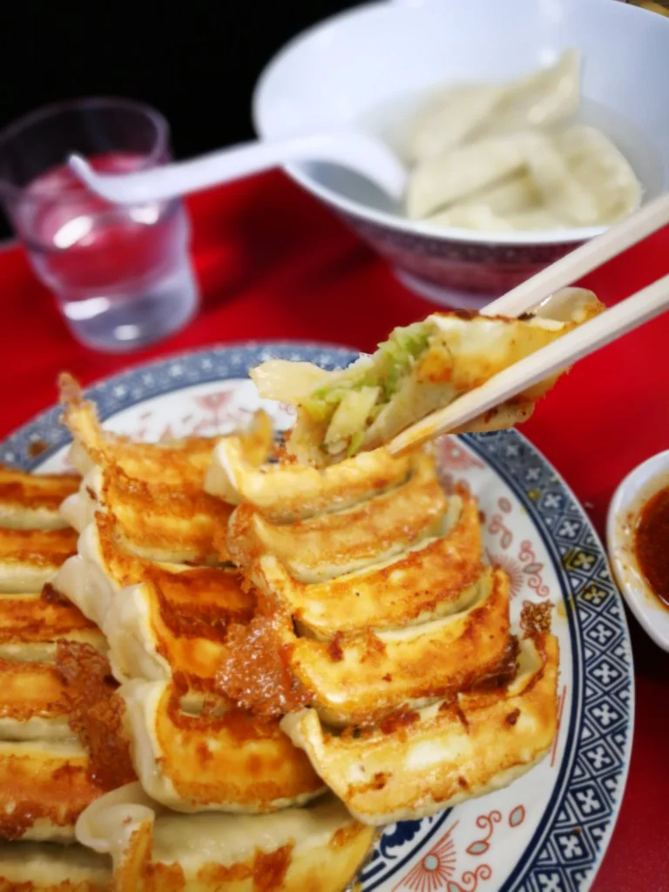
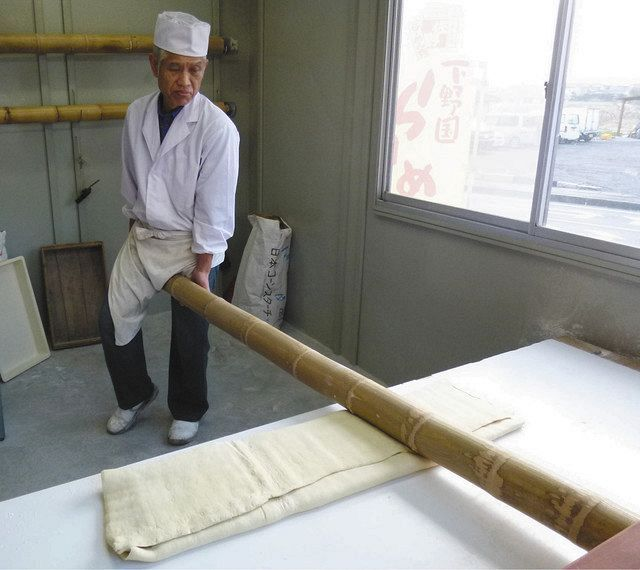
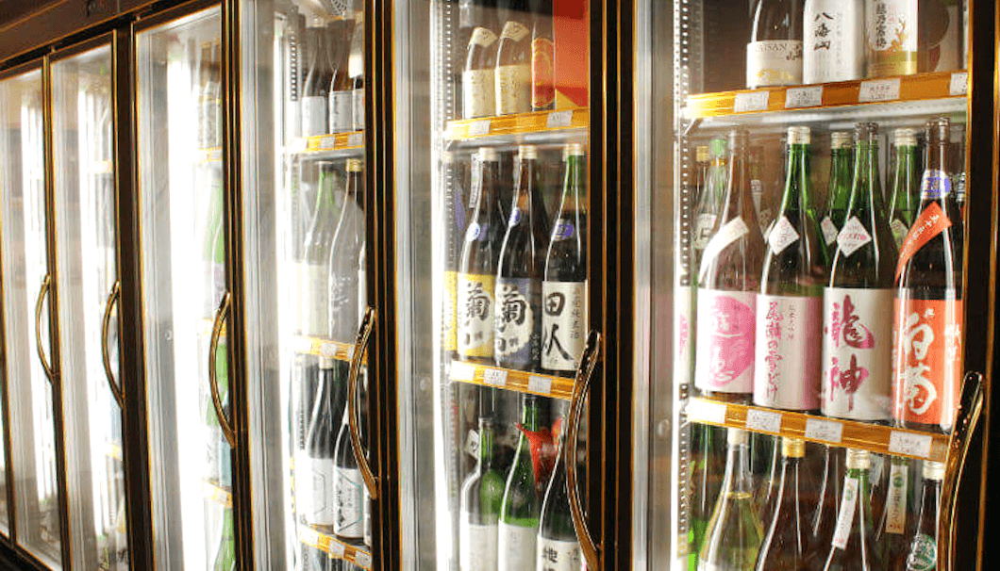
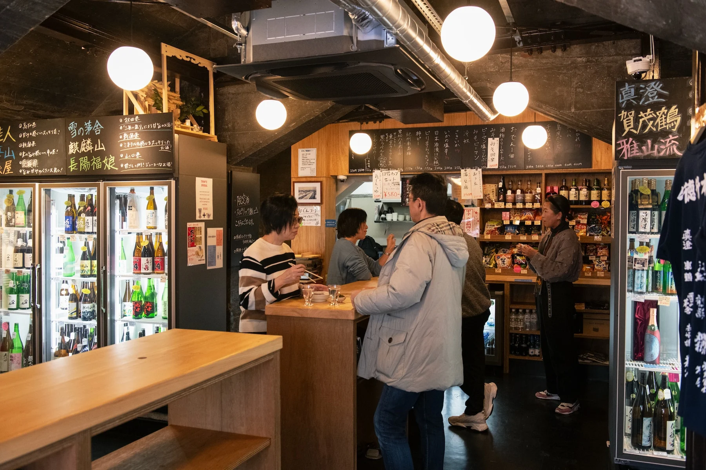
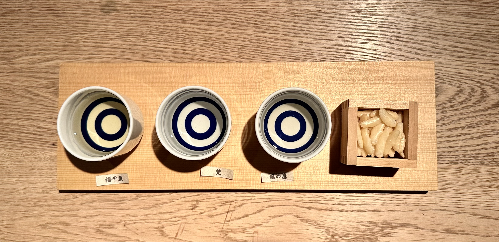
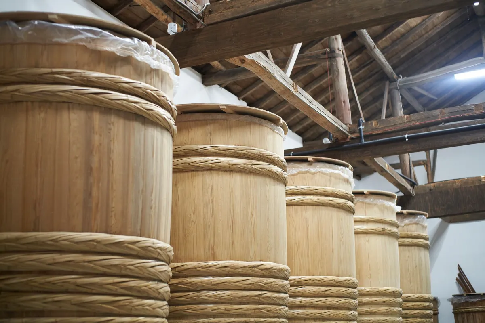

Where to drink it
 shop-yuzawaya-saketen.jpg
shop-yuzawaya-saketen.jpg
place-mushu-ogawa.jpg
place-ippachi.jpg
place-zen-nikko.jpg
place-kumao-ujiie.jpg
place-masashi-gyoza.jpg
place-hinataya-sano.jpg
place-shimadaya-cover.jpgShimadaya Saketen, Miya-Mirai
- Location
- Utsunomiya Terrace 2F, Miya-Mirai 1-1, Utsunomiya
- Phone
- 028-651-0141
- Hours
- 11:00–20:30, daily
- How to book
- You don't. Walk in.
- Seats
- About 20, standing
- English menu
- Yes
- English staff
- Sometimes
- Cards
- Yes, and IC
First impressions
Shimadaya is a liquor shop that lets you drink before you buy, which is rarer than it sounds. It's on the second floor of the station building in Utsunomiya, about a minute from the platform. There's a counter running down one side and a wall of fridges down the other, and the first thing most people do is stand there working out whether they're allowed to open something.
You are. Any bottle with a small tag on it can be opened at the counter, and they'll pour you a measure of it. The room is bright and modern, which is deliberate — the prefecture's old tasting room was a wooden building open two hours an evening and hardly anybody went. This one opens at eleven and runs until 8:30 at night, every day of the week.
The staff are shop staff rather than bartenders, and they're the useful kind: ask what's drinking well this month and you'll get a straight answer rather than whatever they're trying to shift.

place-shimadaya-counter.jpgWhat to order
Everything on the shelves is from Tochigi. All twenty-eight breweries in the prefecture are here, along with about a hundred local shochu, wine, liqueurs and beers. There's no Juyondai, no Jikon, nothing from Yamagata or Niigata — and that's the point. Most of what's in this room you can't buy at home.
Food and drink quality
The sake is looked after, which matters more than it sounds like it should. Everything's refrigerated, seasonal bottles turn up when they're released rather than three months later, and somebody in the room knows which of the twenty-eight breweries is drinking well at the moment.
The food is bar snacks and doesn't pretend otherwise. Nobody's coming here to eat, and the menu knows it.
What the place is really good at is letting you compare things. The same brewery made two ways, the same tank pressed at different stages, the same rice with different water. Three glasses side by side will teach you more in twenty minutes than three bottles will over three nights.

place-shimadaya-flight.jpgWhat it's like
It's mostly locals stopping in before a train, plus a few people who've made a point of coming. There's a map of the prefecture's breweries on the wall and it's worth a minute of your time, because it shows you how close together everything you're drinking actually is.
It's standing room for about twenty, so you end up shoulder to shoulder with somebody whether you planned to or not. Nobody's going to lecture you. Ask what something is and you'll get an answer; ask what they'd drink and you'll get a better one.
The easiest way to use it is to turn up around six, work out what you like over three or four glasses, buy a couple of bottles on the way out and get your train.
The best ¥1,200 you can spend in Tochigi. Come here on your first evening and you'll know what to order everywhere else you go.

brewery-senkin.jpg